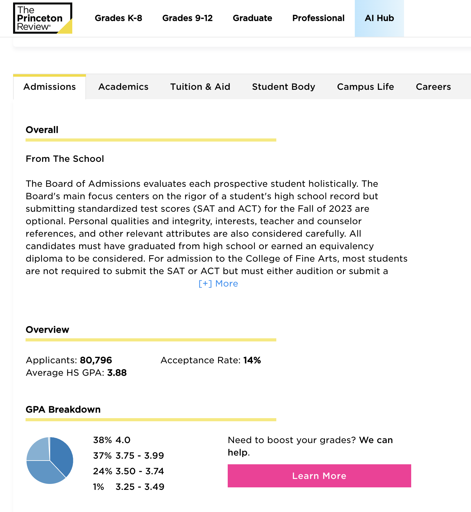

- Comparison table example
- Comparative Research using Commonapp.org and PrincetonReview.com
- Scenario Exploration: Side/Left Navigation, Tabbed Navigation and Pagination
- Guided Search/Filter Form examples
Comparison table example
Common App
Comparative Research using Commonapp.org and PrincetonReview.com
Common App
üìù Apply to college with Common App | Your future starts here is a non-profit organization that offers a standardized college application platform for students to apply to multiple colleges and universities in the US and other countries. It simplifies the application process by allowing students to create a single application with standard questions about their personal and academic background, essays, and supplemental materials.
| Benefits | Screenshots |
|---|---|
| 1. Simple and intuitive interface: Clean and easy-to-use interface that is designed to make the application process as straightforward as possible. Users can easily navigate through the site, find the information they need, and complete their applications with minimal confusion. |
|
| 2. Responsive design: Optimized for a variety of devices, including desktop computers, laptops, tablets, and smartphones. This allows users to access the site from anywhere and complete their applications on the go. Heavy on the mobile usage, almost mobile-first.
We are not designing for mobile-first, but it will be important to keep the experience as consistent as possible on mobile/tablet.
|
|
| 3. Personalized dashboard: Once users create an account, they are taken to a personalized dashboard that displays their application status, to-do list, and deadlines. This helps users stay on track and ensure that they complete all of the necessary steps in the application process. (can borrow from this for the Notes section?) |
|
| 4. Search Results: Search results are more compact and include less information taking up less screen real estate. |
|
| 5. My Colleges: Use of accordion menu in the left column listing all of the favorited schools which expand and collapse making better use of left column screen real estate. Similar accordion approach was used for SRH, only going 3 levels deep. |
|
| 7. Help center: Comprehensive help center that provides answers to frequently asked questions, troubleshooting tips, and other resources to help users complete their applications. The right sidebar help content is available throughout the application process and changes based on what particular step the user is completing. We could do something similar for MSAR though that may require content creation. |
|
What can we borrow from this for MSAR? A sidebar possibly? Include a sidebar on the right-hand side of the page with links to related content, such as frequently asked questions (the help tutorial), a glossary of terms, or a contact form for additional questions.
Princeton Review
üìö Test Prep Tutoring | Online Test Preparation | The Princeton Review
Princeton Review is an educational services company that provides test preparation courses, tutoring services, and admissions resources for students.
| Benefits | Screenshots |
|---|---|
| 1. Simple and intuitive interface: Simple and clean interface that makes it easy for users to navigate and find the information they need. The main navigation menu is easy to use and provides quick access to different sections of the site. |
|
| 2. Responsive design: Optimized for different devices and screen sizes, including desktop computers, laptops, tablets, and smartphones which ensures that users can access the site from any device and have a seamless experience.
We are not designing for mobile-first, but it will be important to keep the experience as consistent as possible on mobile/tablet. Thinking of the left nav in mobile.
|
|
| 3. Personalized dashboard: Once users create an account, they are taken to a personalized dashboard that displays their progress and test scores. This helps users track their progress and identify areas where they need to improve. |
|
| 4. Search Results: Search results are more compact and include less information taking up less screen real estate. |
|
| 5. School Profile Pages: Includes a carousel feature (which has been mentioned as "could have") along with a background image. Simple tabbed navigation within the body of the page which is an idea worth exploring, without the right column perhaps?
We would need to augment the functionality here to include images (if it doesn't already) and enhance the way it looks: Component Library
American University of Antigua (AUA) College of Medicine - The Princeton Review Med School Listings |
|
| 6. Test prep tools: Offers a variety of test prep tools, including practice tests, study materials, and tutoring services. These tools are designed to help students prepare for standardized tests like the SAT, ACT, and GRE. |
|
| 7. User reviews and ratings: Includes user reviews and ratings for test prep services and college programs. This information can help users make informed decisions about which services to use and which programs to apply to. |

|
Commonalities between Common App and Princeton Review: More compact Search results pages, personalized dashboards, responsive design which works well, help content is readily available during the processes.
Scenario Exploration: Side/Left Navigation, Tabbed Navigation and Pagination
Side/Left Navigation:
- Visibility: More visible than tabbed navigation, as it is usually located on the left of the page.
- Scannability: Can be easier for users to scan and find the content they are looking for, particularly if the navigation is well-organized with clear labels.
- Consistency: Common design pattern that users are familiar with, so incorporating it into a site can help create a sense of consistency and familiarity.
- Customization: Also highly customizable and can allow for a range of design options, for example, accordion menus as in the Common App or Students & Residents Hub
- Space-consuming: Can take up a significant amount of screen real estate, particularly on smaller screens or when there are many items in the navigation. Currently in the GCL, the mobile version of this is just a list above the content area and not within a hamburger/drop-down menu.
- Navigation: Might cause users to scroll down the page to access lower items in the navigation, which can be inconvenient for long lists.
- Limited customization: Can be more difficult to customize and may not allow for as much flexibility in terms of design or layout.
Tabbed Navigation
- Space-saving: Can be a way to save space on a page by allowing users to toggle between different sections without requiring them to navigate to a separate page. (Referencing Princeton Review)
- Navigation: In certain cases, it's easier for users to navigate between different sections of a page without losing their place or having to scroll back up to the top of the page.
- Organization: Helps organize large amounts of content into more manageable sections, making it easier for users to find the information they need. (Referencing Princeton Review)
- Consistency: Common design pattern that users are familiar with and incorporating them into a site can help create a sense of consistency and familiarity.
- Limited visibility: Sometimes are less visible than side navigation, particularly if they are located above or below the main content area. Can make it harder for users to find and use while scrolling.
- Limited labeling: May not provide enough space for clear labeling of each tab, particularly if there are many tabs or if the labels are long.
- Limited content: Might not be suitable for all types of content, as they may not provide enough space or flexibility for more complex or detailed information.
Princeton Review
Tabs work for Princeton Review because there is minimal content to display on profile pages. We have much more content, so would recommend to go with the newer version of the left nav from the GCL.
Pagination
- Large Sets of Content: Organize content into sections or categories for easier access.
- Reducing Scrolling: Prevent excessive scrolling on long pages or articles.
- Performance Optimization: Improve page load times, especially for content-rich sites.
- Enhanced User Experience: Create structured and organized navigation.
- Clear Content Separation: Signify transitions between different sections of content. Currently on MSAR there are no previous/next links used in navigating ALL schools returned in the search results. Worth exploring.
- Fragmented Content: Avoid excessive pagination for small, fragmented content.
- Inefficiency for Short Content: For very short content, pagination may not be necessary.
- SEO Considerations: Be mindful of potential SEO impacts.
- Mobile Optimization: Ensure a mobile-friendly experience with responsive design.
Floating Pagination Pros and Cons:
- Improved Accessibility: Provides easy access to pagination controls without requiring users to scroll back to the top of long pages.
- Enhanced User Experience: Users can navigate through lengthy content more efficiently, saving time and effort.
- Smooth Scrolling: Allows for a seamless scrolling experience, as users can move through content continuously without interruptions. Would be helpful if we do NOT break up the school profile pages and keep it as one long scroll.
- User-Friendly: Familiarity with pagination controls (e.g., next and previous buttons) makes it user-friendly and intuitive.
- Time-Saving: Users don't have to perform extra scrolling actions to navigate to different pages of content.
- Visual Clutter: On pages with limited content, floating pagination may introduce unnecessary visual elements that clutter the interface.
- Potential Obscuration: It may cover or obscure important content or functionality on certain pages with specific layouts.
- Design Incompatibility: Floating pagination might not align well with certain design styles or fixed layouts.
- Reduced Screen Space: On smaller screens, floating pagination may consume valuable screen real estate, impacting content visibility.
- Context Sensitivity: Its appropriateness depends on the specific page's content length and layout; Not universally suitable.